AlphaDEX has a design system.
Three pages use it.
Every screen in the PySide6 app was launched, screenshotted in both the default dark (Midnight) and light (Pearl) themes, and read against its source. The finding is not that the app lacks a visual language — it ships a thorough one. It is that the language is optional, and most screens declined it.
font-size rulesThe verdict
Read this part and you can skip the rest.
AlphaDEX already has a real design system. gui/themes/ defines 14 complete
themes as frozen token dataclasses, a 39 KB QProxyStyle that hand-paints every control,
a point-based TypeScale, and a QSS layer exposing a 15-name component vocabulary
(workspaceCard, headerCard, actionCard,
workflowStepper, sectionTitle, cardTitle …). It is genuinely
good work. When a page uses it, that page themes correctly across all 14 themes for free.
The system is opt-in, and opting out is easier. WorkspaceBase offers helpers —
_make_card(), _make_card_title(), _make_primary_button() — but
nothing requires them, and no token object is reachable from a workspace without importing the
manager by hand. So the path of least resistance is setStyleSheet("color: #64748b").
Twelve of fourteen workspaces took it.
The result is four visual languages in one binary. A hero-card-and-stepper language
(Indexer, Duplicates, Library Sync); a bare-title-and-loose-controls language (most of the rest);
a tile-and-status-pill language (Utilities); and a full-bleed application chrome language (Player).
Plus gui/qt_launcher.py — 698 lines and the single densest concentration of hardcoded
styling in the tree — which the active app never loads at all.
The fix is not a redesign. The target already exists on screen: the Indexer page. The work is closing the escape hatches so the system is the only convenient path, then migrating eleven pages onto it. Sequence in the migration plan.
Adoption matrix
Counted from source, not from impression. “Header card”, “stepper” and “action card” are the three elements that make the Indexer page look the way it does; “tokens” counts references to the live theme object.
| Workspace | Lines | Header card | Stepper | Action card | Cards | Card titles | Tokens | setStyleSheet | Hex | Verdict |
|---|---|---|---|---|---|---|---|---|---|---|
| Indexer | 382 | ✓ | ✓ | ✓ | 5 | 4 | 0 | 0 | 3 | reference |
| Duplicates | 658 | ✓ | ✓ | ✓ | 6 | 3 | 0 | 2 | 6 | conforms |
| Library Sync | 911 | ✓ | ✓ | ✓ | 9 | 6 | 0 | 1 | 9 | conforms, overflows |
| Genre Normalizer | 648 | — | — | — | 6 | 6 | 0 | 2 | 7 | own step idiom |
| Compression | 448 | — | — | — | 3 | 3 | 0 | 8 | 8 | drift |
| Tag Fixer | 416 | — | — | — | 3 | 0 | 0 | 3 | 8 | drift |
| Similarity | 243 | — | — | — | 2 | 0 | 0 | 1 | 3 | drift |
| Clustered | 561 | — | — | — | 4 | 0 | 0 | 4 | 3 | drift |
| Playlists | 394 | — | — | — | 1 | 0 | 0 | 1 | 3 | drift |
| Music Graph | 367 | — | — | — | 3 | 0 | 0 | 0 | 0 | drift, but clean |
| Help | 96 | — | — | — | 3 | 0 | 0 | 1 | 1 | drift |
| Utilities | 1443 | — | — | — | 0 | 0 | 16 | 11 | 3 | parallel system |
| Player | 1980 | — | — | — | 0 | 0 | 0 | 16 | 16 | off-system |
| Clustered (legacy) | 263 | — | — | — | 3 | 0 | 0 | 2 | 4 | unrouted |
“Clustered (legacy)” is gui/workspaces/clustered.py; main_window.py
imports clustered_enhanced.py under the same key, so the legacy file is built but never shown.
gui/qt_launcher.py (698 lines, 47 setStyleSheet calls, 45 hardcoded colors) is excluded —
it is reachable only from the legacy Tkinter app via main_gui.py:11102.
Defects, not taste
Eight of these are wrong by any style guide. They surfaced while capturing the screenshots — three of them prevented capture entirely until fixed. Each is small; each has a named fix and a line number.
D1Every tab label and every group-box title fails to paintcrash
gui/themes/style.py:537 · gui/themes/style.py:554
The custom style engine asks for a font weight that does not exist in Qt 6. Qt's enum is
DemiBold; there is no SemiBold member in PySide6 or PySide2. The
AttributeError is raised inside a paint override, so Qt swallows it and abandons
that draw call — the label is simply never rendered.
# CE_TabBarTabLabel — raises on every selected tab repaint if active: font.setWeight(QtGui.QFont.Weight.SemiBold) # AttributeError: SemiBold
This hits the three tabbed workspaces (Genre Normalizer, Playlists, Clustered) and the
Settings dialog, plus every QGroupBox title in the app. While capturing, it aborted
widget.grab() outright — those three pages could not be screenshotted until it was
corrected.
SemiBold → DemiBold at both sites.
Applied in this branch so the remaining pages could be captured.D2The Pair Review dialog cannot opencrash
gui/dialogs/pair_review_dialog.py:355–358
Four shortcut constructions use the Qt 5 namespace. QShortcut moved from
QtWidgets to QtGui in Qt 6, so the constructor raises before the dialog
finishes building. Every other file in the tree — main_window.py:221,
player.py:953 — already uses the correct namespace, so this is an isolated miss.
QtWidgets.QShortcut(QtGui.QKeySequence(Qt.Key.Key_Return), self, self._handle_yes) # AttributeError: module 'PySide6.QtWidgets' has no attribute 'QShortcut'
QtWidgets.QShortcut → QtGui.QShortcut ×4.
Applied in this branch; the dialog then opens and is captured below.D3The Cluster Quality Report renders white-on-whiteunusable
gui/dialogs/cluster_quality_report_dialog.py:171, 192, 208
This dialog styles itself for a light theme that the app does not ship as default. It paints
card backgrounds #fafafa and body copy #333, while text it does not
override inherits the active theme's near-white. On Midnight — the default — the metric values,
the per-cluster cards and the suggestions are all invisible.
card.setStyleSheet("border: 1px solid #ddd; border-radius: 4px; background-color: #fafafa;") suggestion_widget.setStyleSheet("color: #333; font-size: 11px;")
There is a compounding Qt subtlety: a border declared on a bare container
QWidget cascades to every child widget, which is why the labels inside also pick up
boxes they were never meant to have.
setObjectName("workspaceCard"). The theme QSS then supplies background, border and
radius correctly in all 14 themes.D4The sidebar wordmark disappears in all six light themescontrast
gui/widgets/sidebar.py:139–142
“AlphaDEX” at the top of the nav rail is pinned to #f8fafc — near-white. Pearl's
sidebar is #f0f2f8. The app's own name is the least legible text on the screen in
half its themes. Visible in the light captures throughout this report.
logo_lbl.setStyleSheet(
"color: #f8fafc;" # ← ignores sidebar_text; invisible on 6 of 14 themes
"font-size: 22px; font-weight: 700; padding: 0 8px; letter-spacing: -0.02em;")
tokens.sidebar_text and repaint on
theme_changed, as Sidebar already does for its nav buttons.D5Light-theme names are unreadable in the theme pickercontrast
gui/themes/picker.py:115
Each swatch previews its own theme, then writes that theme's name using the currently active theme's text colour. Browsing from a dark theme, every light swatch label — Pearl, Blossom, Meadow, Lavender, Sunset — is white on white. You cannot read the name of the theme you are about to pick.
p.setPen(QtGui.QColor(current.text_primary)) # active theme's ink… p.drawText(label_rect, Qt.AlignmentFlag.AlignCenter, t.name) # …on swatch t's ground
current.text_primary → t.text_primary.
One word; the swatch then labels itself in its own palette.D6The Player keeps a dark slab in light themestheming
gui/workspaces/player.py — 16 setStyleSheet calls, 16 hardcoded colors, 0 token reads
The Player is the largest workspace (1,980 lines) and reads the theme zero times. Its track
table, column header, album-art placeholders and separators are fixed to Midnight values
(#30363d, #8b949e, #64748b). Switch to Pearl and the page
keeps a black rectangle across two-thirds of the window. Side-by-side capture in the
Player section.
D7Library Sync overflows its viewport horizontallylayout
gui/workspaces/library_sync.py
At the app's own default window size (1300×860) and at the 1440×900 used for capture, the
Library Sync content is wider than the content area: the “Browse…” buttons on both path rows are
clipped to “Bro”, and a horizontal scrollbar appears under the workspace. The path
QLineEdits carry no width constraint, so they win the layout negotiation against the
buttons beside them.
_make_browse_row() helper in base.py already fixes
the browse button at 80 px for exactly this reason; this page builds its rows by hand instead.D8The landing wordmark is clipped on both sideslayout
gui/widgets/landing.py
The first thing the app shows renders “AlphaDEX” as “lphaDE” — the A and X are cut by the CTA card's fixed width. It is the first frame of the product and it clips the product's name. See Landing.
fontMetrics().horizontalAdvance() fits with padding.Inconsistency catalog
Six axes on which the app disagrees with itself. These are the decisions the standard has to settle.
C1Page headers — three patterns
How a workspace introduces itself is the most visible inconsistency, because it is the first thing on every screen.
- Hero card + stepper — title and description inside a
headerCardwith a 3 px accent left border, followed by aworkflowStepperrail reading1. Preview (dry run) → 2. Review HTML report → 3. Execute changes. Used by Indexer, Duplicates, Library Sync. - Bare title — a
sectionTitlelabel and asectionSubtitlesitting directly on the background with no container. Used by Compression, Similarity, Tag Fixer, Genre Normalizer, Playlists, Clustered, Music Graph, Utilities — eight pages. - Application toolbar — title inline in a control strip with a search field and buttons; no subtitle, no card. Used by Player.
Help is a fourth case: bare title with no subtitle at all.
C2Progress through a workflow — three idioms
Three screens teach the user three different ways to read “where am I in this process”.
- Inline stepper rail —
1. Scan & fingerprint → 2. Review groups → 3. Execute plan, active step in accent, rest muted. Indexer, Duplicates, Library Sync. - Numbered card headings —
1 · Collect the raw genres,2 · Build the mapping,3 · Preview what would changeas the titles of stacked cards. Genre Normalizer only. - Wizard counter + progress bar —
Step 1: Feature Selectionwith1 of 5and a green bar. Clustering Wizard dialog only — and the bar is green while the app's accent is blue.
Separately, the Indexer's Progress card uses a fourth vocabulary — Phase A / Phase B / Phase C — for the same underlying run it describes as steps 1–3 in its own stepper.
C3Buttons — a three-name vocabulary, thinly used
The style engine recognises exactly three semantic buttons by objectName —
primaryBtn, dangerBtn, successBtn — and paints everything
else as a neutral card-coloured button. There is no secondary, ghost, or toolbar variant, so any
page wanting one invents it.
The consequential disagreement is which colour means “commit”:
- Duplicates commits with a red Execute button — destructive framing.
- Tag Fixer commits with a green Apply Selected button — confirmation framing.
Both write to the user's library. A user who learns one page is primed wrongly for the other.
Grouping is also unsettled: Indexer and Duplicates put actions in a bordered
actionCard; Tag Fixer, Similarity and Compression leave the same buttons floating
loose between cards.
Icon convention is a third axis — Duplicates ships
🔍 Scan Library / ▶ Execute with emoji baked into the label string,
Compression ships 🔍 Estimate Space Savings, while Help, Graph and Playlists use
bare text. Clustered puts emoji in its tab labels
(🚀 Quick Start); Genre Normalizer and Playlists do not.
C4Colour — the token file is bypassed 54 times
Outside tokens.py, the active app hardcodes 54 distinct colours. Three
clusters matter:
- The status triple is copy-pasted into 11 files.
#22c55e/#f59e0b/#ef4444appear across Duplicates, Library Sync, Tag Fixer, Genres, Similarity, Playlists, Clustered, Indexer, Tools, and two dialogs. Those are exactly the dark defaults fromtokens._d(). Every light theme defines different ones —#16a34a/#d97706/#dc2626— so all 11 files are wrong in all 6 light themes. #64748bis used 23 times and is not a token in any theme. It is Tailwind's slate-500, standing in for secondary text wheretext_secondaryortext_mutedbelongs. Four more off-palette greys (#f8fafc,#818cf8,#e2e8f0,#1e2130) appear the same way.- The root cause is an API shape.
WorkspaceBase.status_changed = Signal(str, str)takes a colour string as its second argument, so every caller must hardcode a hex to emit a status at all.
# duplicates.py:482, 590, 596 — the signal's contract forces this self.status_changed.emit("Scanning…", "#f59e0b") self.status_changed.emit("Scan complete", "#22c55e") self.status_changed.emit("Error", "#ef4444")
"busy" / "ok" / "error" — and let the log drawer resolve it
against the live tokens. This deletes roughly 30 hardcoded colours by changing one signature.C5Typography — two systems, different units, one wins by accident
gui/fonts/loader.py defines a complete TypeScale: named roles
(SECTION_HDR, BODY, LABEL, SMALL,
NAV_ITEM, BUTTON…), six weights and three letter-spacing steps, all in
points. Nothing outside the theme engine imports it. No workspace, no dialog, no widget.
Meanwhile the app carries 68 hardcoded font-size declarations in pixels
across ten distinct values — 9, 10, 11, 12, 13, 14, 15, 16, 18 and 22 px. Because a widget
stylesheet beats the font applied in polish(), the ad-hoc px values silently win
wherever they appear.
Font families are bypassed the same way: UI_STACK and MONO_STACK
name Inter and JetBrains Mono, but eight files hardcode
font-family: 'Consolas', monospace for their log panes — so the app's monospace face
changes depending on which page you are looking at.
C6Spacing — no grid
Across the workspaces there are 20 distinct setContentsMargins tuples and
seven setSpacing values. The dominant card padding
(16, 16, 16, 16) is used 37 times, which is the good news; the other 19 variants —
(20,16,16,16), (16,14,16,14), (18,10,18,16),
(12,8,12,8), (8,4,8,8) — are each used once or twice with no rule
behind them.
Spacing splits 18×8, 17×10, 9×12, 8×6,
8×4. The 6s and 10s put the app off any consistent 4- or 8-point rhythm, and there
are no named constants to reach for — gui/themes/effects.py exports radius constants
(R.button, R.card, R.input) but no spacing scale.
Page by page
Every workspace as captured, with what its source says. Pages are grouped in the app's own nav order. Dark captures are Midnight (default); light captures are Pearl.
Indexer
reference page gui/workspaces/indexer.py · 382 lines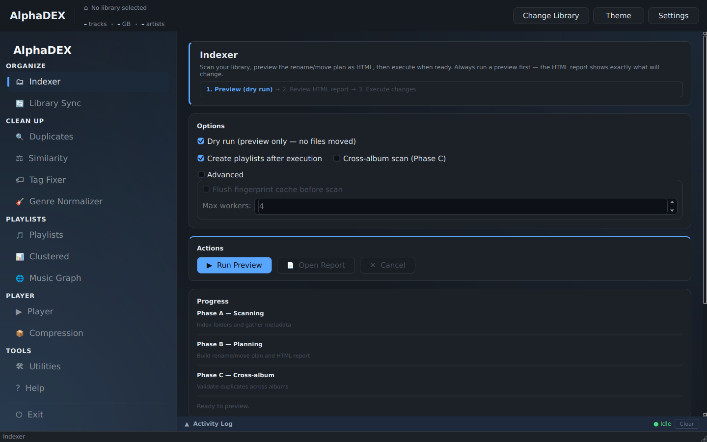
Why this is the target
- Hero card with accent left border carries title + description together.
- Stepper rail states the whole workflow before you start it.
- Cards group Options, Actions and Progress; each has a
cardTitle. - One primary action — Run Preview — with secondaries beside it in a bordered
actionCard. - Zero
setStyleSheetcalls. It themes correctly in all 14 themes because it never fights the engine.
Even here
- Three hardcoded status colours, forced by the
status_changedsignature (C4). - Progress card says Phase A/B/C while the stepper above says 1/2/3 — two names for one process (C2).
Library Sync
conforms, but overflows gui/workspaces/library_sync.py · 911 lines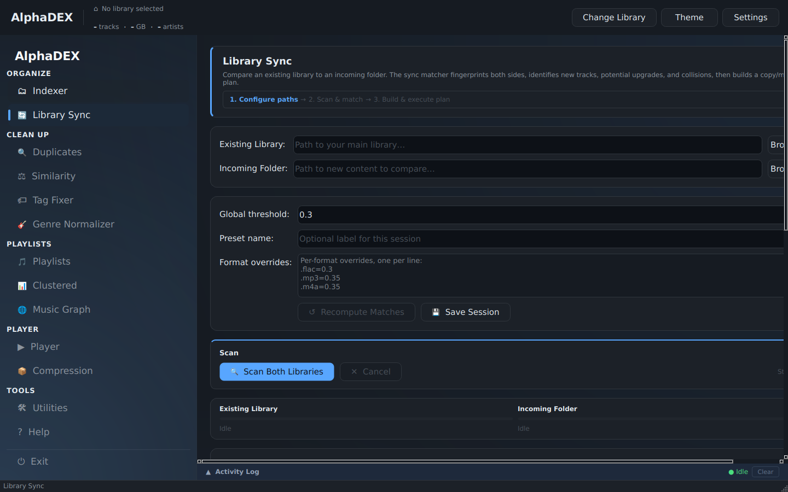
Structure
- Uses the full page pattern — the third and last workspace that does.
- Nine cards, six with titles; the most card-dense page in the app.
Problems
- Horizontal overflow (D7). Both Browse buttons are clipped and the content area scrolls sideways at 1440 px — well above the app's own 900 px minimum width.
- The first two cards carry no card title, so “Existing Library / Incoming Folder” and the threshold block read as one undifferentiated slab.
- Action buttons are split across two places — a “Scan”
actionCardand a looseRecompute Matches/Save Sessionpair inside the settings card. - Nine hardcoded colours including the status triple (C4).
Duplicates
conforms gui/workspaces/duplicates.py · 658 lines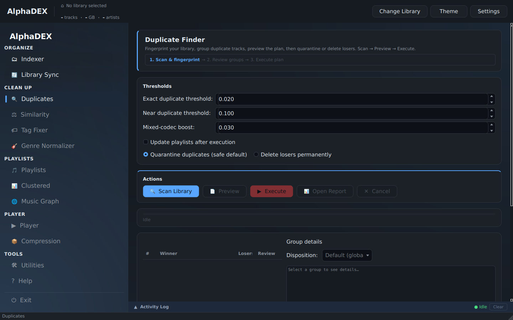
Structure
- Full page pattern, cleanly executed — the second-best page in the app.
Divergences
- Commits in red.
Executeis adangerBtn; Tag Fixer's equivalent is green (C3). One of the two has to change. - Emoji in button labels —
🔍 Scan Library,📄 Preview,📊 Open Report— baked into the label strings rather than set as icons. - The per-group Disposition combo is decorative — built but not read, per the
project's own
gui_inventory.md.
Similarity Inspector
drift gui/workspaces/similarity.py · 243 lines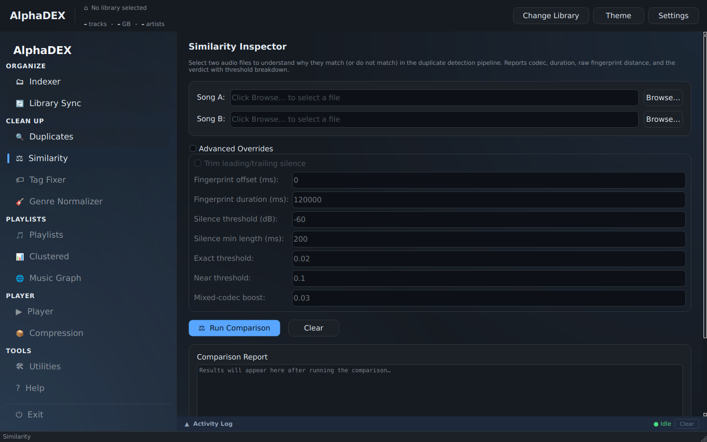
Divergences
- Bare title — no hero card, no stepper, despite being a three-step task (pick A, pick B, compare).
- No card titles. Both cards are untitled, so the Advanced Overrides group is introduced by a loose checkbox floating above it instead of a heading.
- Loose actions.
Run Comparison/Clearsit directly on the background rather than in anactionCard. - Form labels are right-aligned here and left-aligned on Compression — no rule.
Tag Fixer
drift gui/workspaces/tag_fixer.py · 416 lines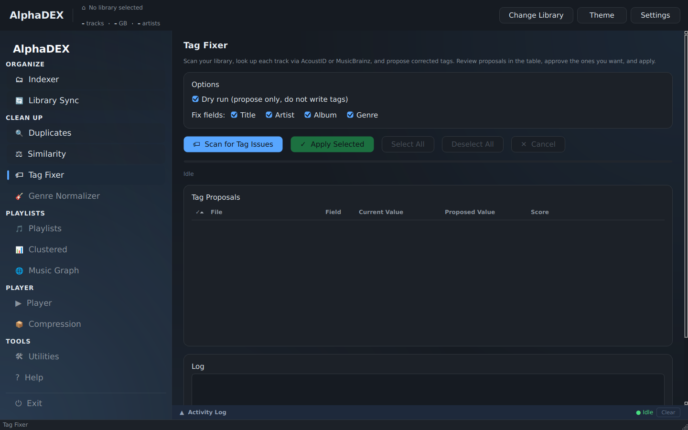
Divergences
- Commits in green.
✓ Apply Selectedis asuccessBtnand it writes tags to disk. Duplicates frames the same class of action in red (C3). This is the single clearest semantic contradiction in the app. - Bare title, no stepper — though the page is explicitly scan → review → apply.
- Five loose buttons in a row with no grouping container.
#64748btwice for status text (C4); hardcoded'Consolas'for the log pane (C5).
Genre Normalizer
own step idiom gui/workspaces/genres.py · 648 lines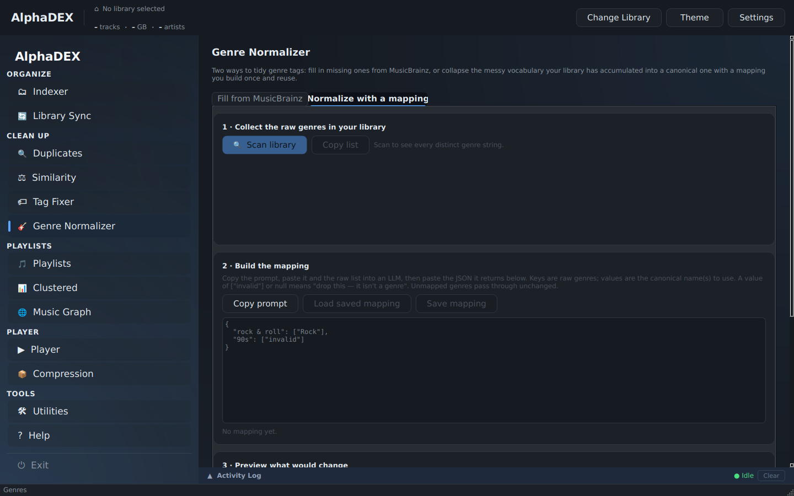
Notes
- Best card discipline in the app — six cards, six titles. The content model is right.
- Third step idiom (C2). Steps live in the card headings —
1 · Collect the raw genres,2 · Build the mapping,3 · Preview what would change— rather than in a stepper rail. Arguably better for a long page, but it is a third dialect. - Tab labels are plain text here and emoji-prefixed on Clustered (C3).
- Tabs render tight against the card edge with a hairline underline; the Settings dialog renders the same widget flush to x=0. No shared tab chrome.
Also captured
tab_genres__0_fill_from_musicbrainz.png— the sibling tab.
Playlists
drift gui/workspaces/playlists.py · 394 lines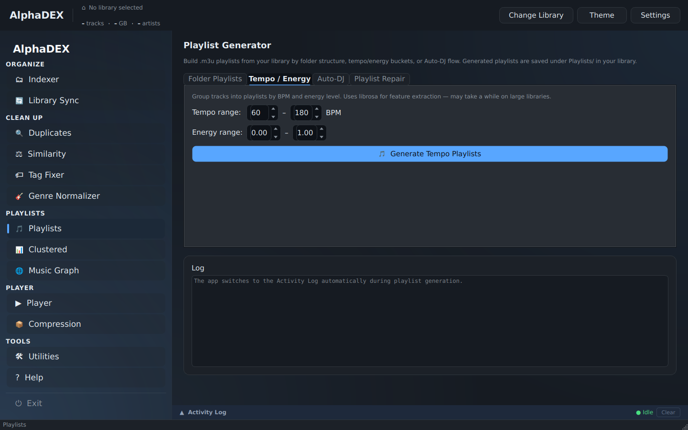
Divergences
- Four tabs, one card. Each tab is a loose stack of subtitle + controls with no card
container — the only page using
_make_subtitlefive times as a substitute for card titles. - Four primary buttons across four tabs, so “the primary action” is ambiguous per page.
- Per
gui_inventory.md, the tempo/energy range fields and “Prefer Opus” checkbox are decorative — rendered but never read.
Also captured
- Folder Playlists, Auto-DJ, Playlist Repair tabs.
Clustered Playlists
drift gui/workspaces/clustered_enhanced.py · 561 lines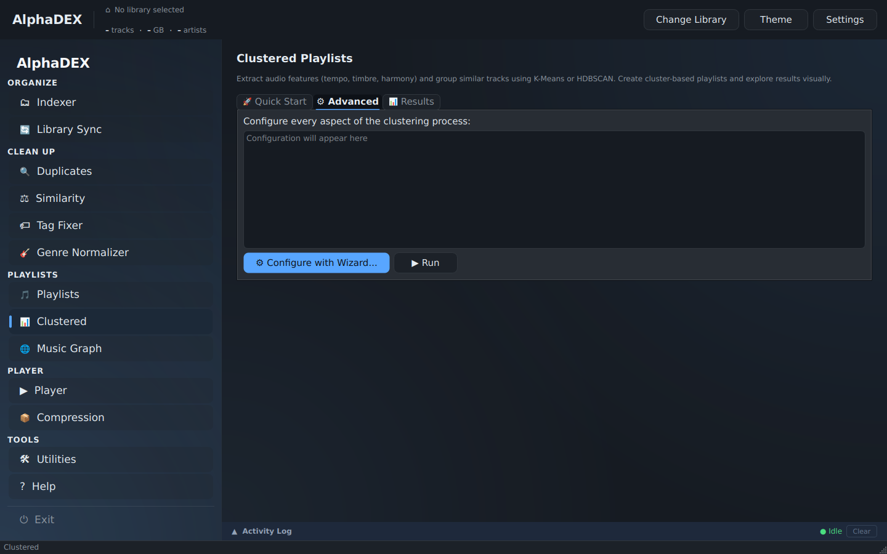
Divergences
- Emoji tab labels —
🚀 Quick Start,⚙ Advanced,📊 Results— unique to this page (C3). - Four cards, zero card titles; headings are raw labels instead.
- Hardcoded
#ef4444and#22c55efor inline result messages (C4). - A dead twin exists.
clustered.py(263 lines) is a complete second implementation thatmain_window.pynever routes to — it importsclustered_enhancedunder the"clustered"key. Two files to keep in sync, one of which nobody sees.
Music Graph
drift, but clean gui/workspaces/graph.py · 367 lines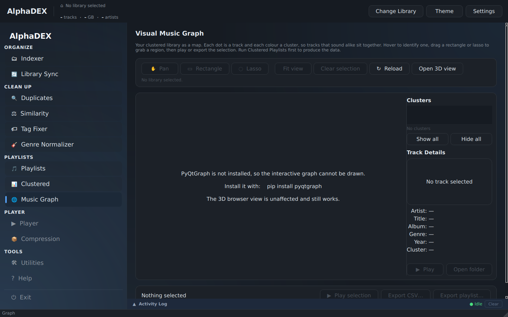
Notes
- The cleanest non-conforming page — zero
setStyleSheet, zero hardcoded colours. It drifts structurally, not chromatically. - Eight buttons, none semantic. Pan / Rectangle / Lasso are a mode group but render as eight identical neutral buttons — no toggle or segmented-control treatment exists in the vocabulary (C3).
- Right panel headings (“Clusters”, “Track Details”) sit outside their cards, unlike every card-titled page.
- Its empty state is the most helpful in the app — it names the missing dependency and the exact install command. Worth making the standard.
Player
off-system gui/workspaces/player.py · 1,980 lines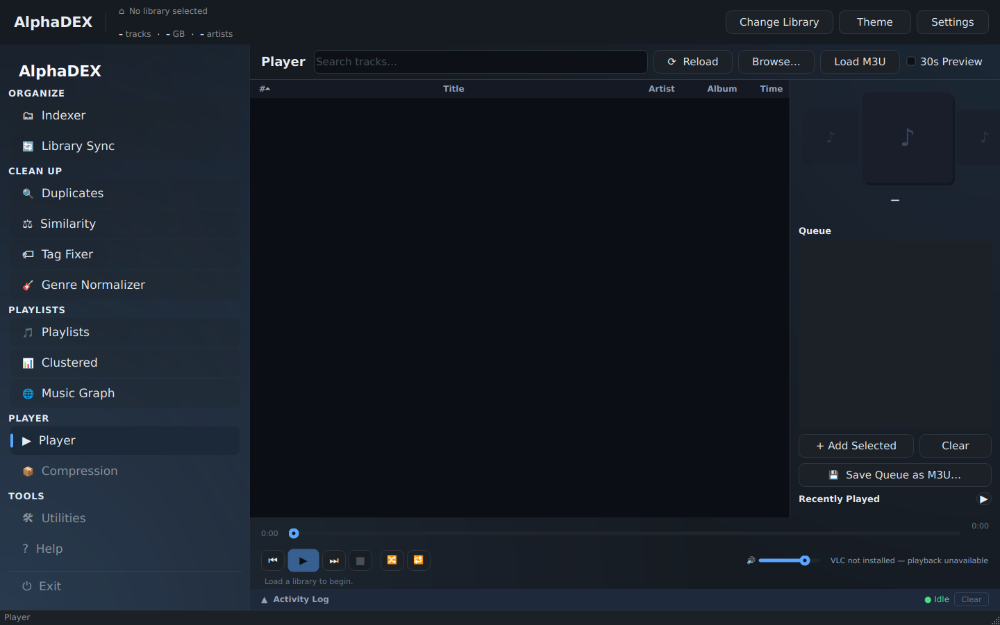
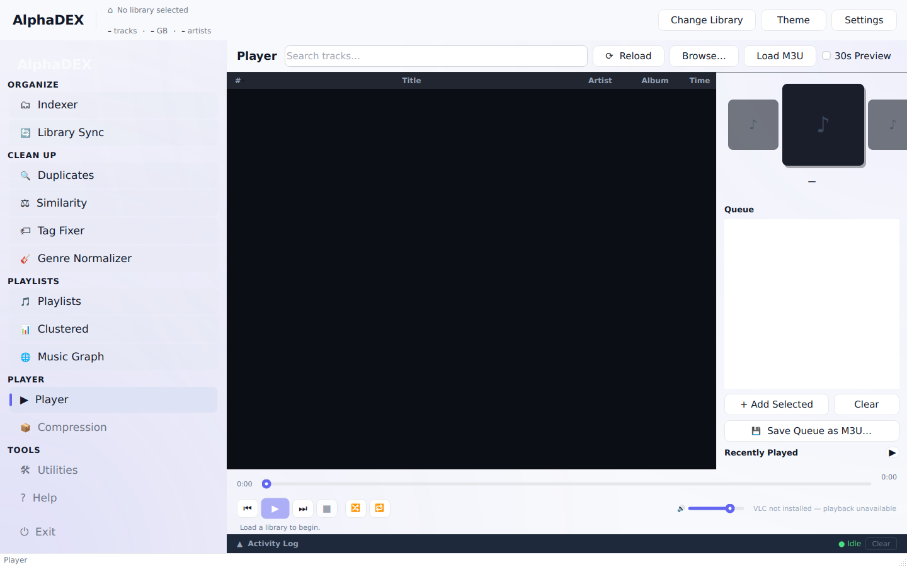
The biggest divergence in the app
- Does not theme. Sixteen stylesheets, sixteen hardcoded colours, zero token reads. In Pearl the track table, its header, the album-art placeholders and the separators all stay Midnight — a black rectangle across two-thirds of a white window (D6).
- No cards, no scroll area. It bypasses
WorkspaceBase's content layout entirely and lays out full-bleed, so it has none of the 24 px gutter every other page has. - Third header pattern — title inline with a search field and four buttons (C1).
- Off-accent transport. Shuffle and repeat render orange in every theme, including themes whose accent is blue, green or pink.
- Eleven hardcoded
font-sizerules — more than any other file (C5).
A full-bleed media view is a legitimate exception to a card layout — players do look like this. The defensible version of that exception still reads its colours from the theme. Treat Player as its own migration phase.
Compression
drift gui/workspaces/compression.py · 448 lines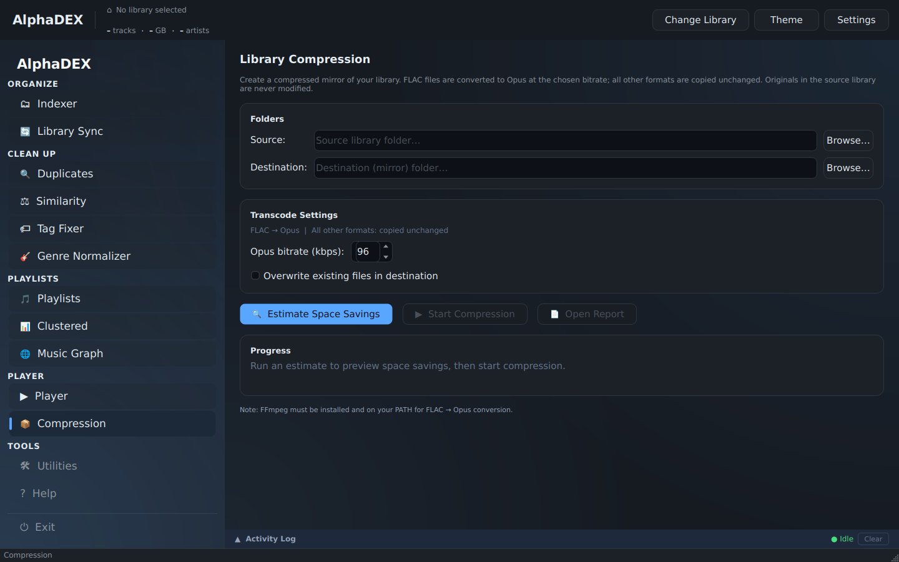
Divergences
- Bare title on a page that is explicitly configure → estimate → run — a textbook stepper candidate (C1, C2).
- Loose action row between two cards instead of an
actionCard. - Colour-codes results by hand —
#4ade80on success,#f87171on failure,#64748bat rest — four separate stylesheet swaps on one label where a semantic state would do (C4). - Trailing note (“FFmpeg must be installed…”) is a bare label outside any card, a pattern used nowhere else.
Utilities
a parallel design system gui/workspaces/tools.py · 1,443 lines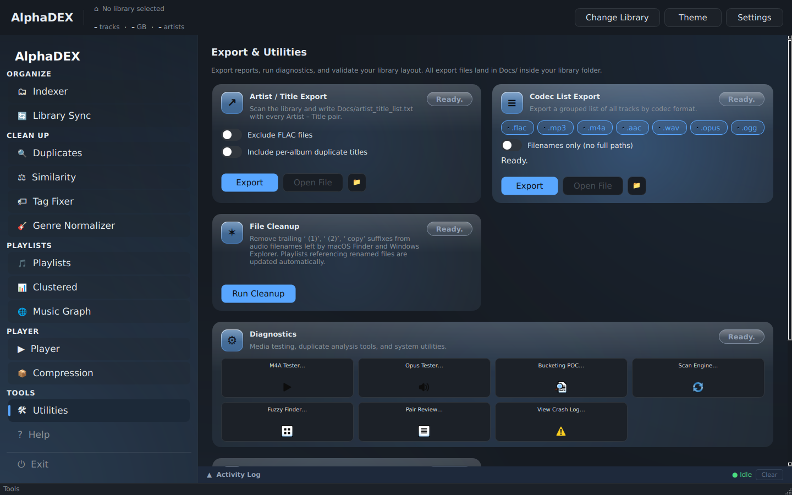
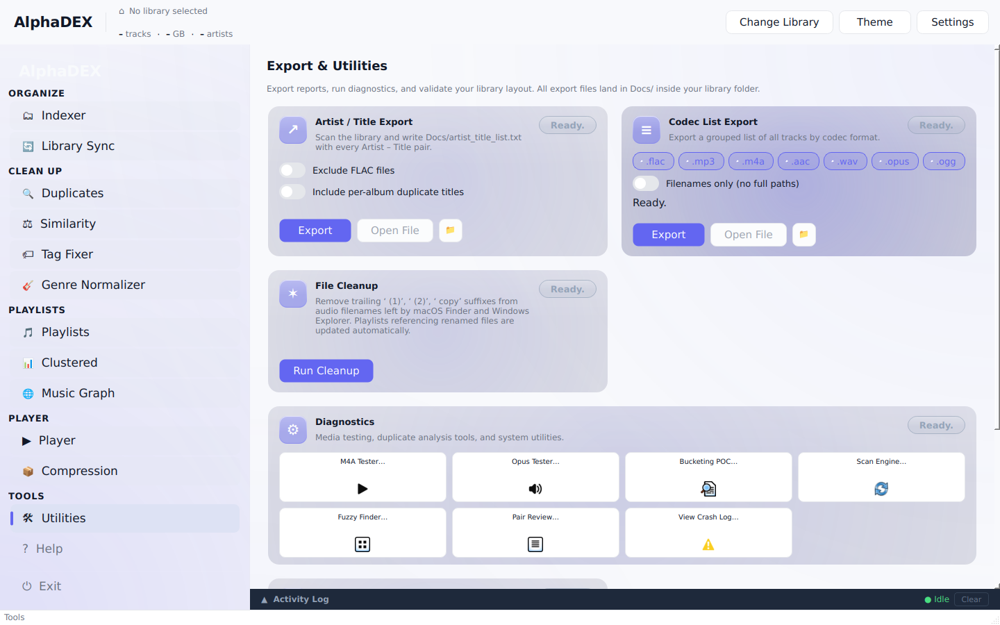
The interesting case
- The only workspace that reads the theme — 16 token references, and it is the only page besides the conformers that survives a theme switch intact.
- But it built its own components to do it. Icon tiles in rounded squares, “Ready.”
status pills, codec chip rows, and a two-column grid — none of which exist anywhere else, and
none of which use
_make_card(). - Diagnostics buttons invert the usual order, putting the label above the icon; every other button in the app is icon-then-label.
- Its status pill is a genuinely good component. It is the strongest argument for the component-library direction — the vocabulary needs to grow, and this page shows what it should grow into.
Help
drift gui/workspaces/help.py · 96 lines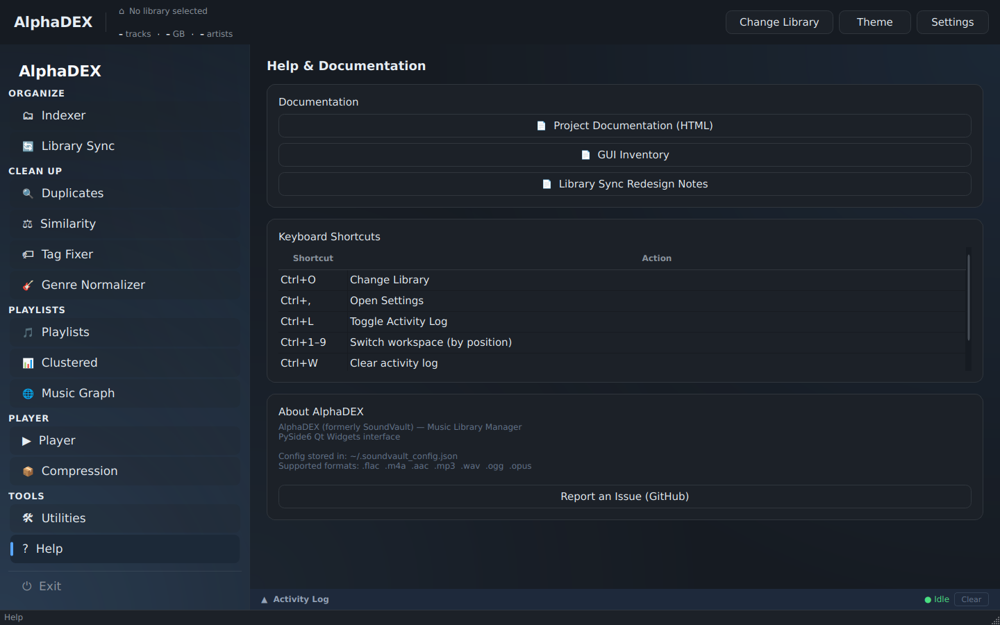
Divergences
- The only page with no subtitle under its title (C1).
- Full-width buttons as list rows — the three doc links and “Report an Issue” stretch edge to edge, a control shape used nowhere else in the app.
- Three cards, no card titles; headings are plain labels at a different weight than
cardTitleelsewhere. - No primary action, so the page has no visual entry point.
Chrome
The frame around every workspace — and the first screen anyone sees.
Landing
clipped wordmark gui/widgets/landing.py · 1,113 lines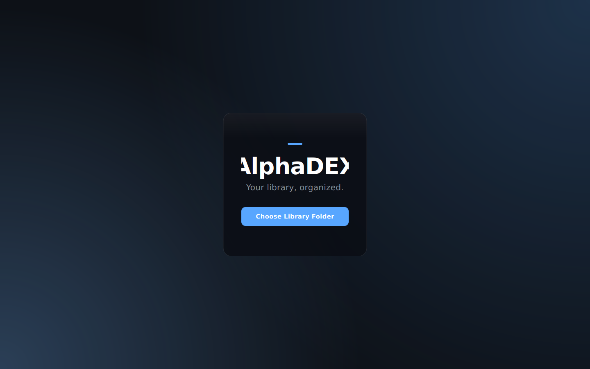
Notes
- The wordmark is clipped on both sides (D8) — the A and the X are cut off by the CTA card's fixed width. This is the first frame of the application.
- 42 hardcoded colours, second only to the orphaned
qt_launcher.py. - Its centred hero card, gradient ground and generous scale are a genuinely distinct moment — appropriate for a landing, but it shares no tokens, radii or type with the app it opens into, so the transition is a hard cut.
Activity Log drawer
gui/widgets/log_drawer.py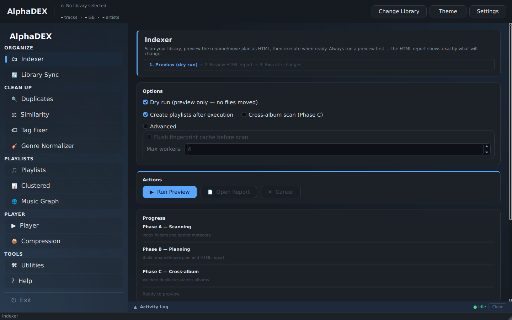
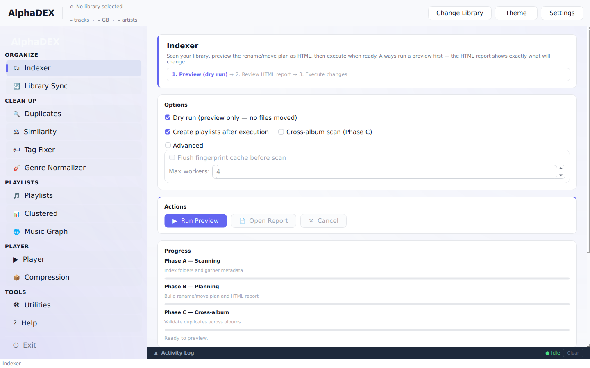
Notes
- The dark log surface in light themes is deliberate — every light theme defines a
dark
log_bg. It is a defensible “console” convention, but it is currently the only inverted surface in the app and it reads as unfinished rather than intentional. The standard should either commit to it (give it a console frame and a header) or drop it. - The handle hardcodes
#1e293band the toggle icon#94a3b8, ignoring thelog_handletoken that exists for exactly this (C4). - Status chip colour arrives from the workspace as a raw hex string (C4).
Dialogs
Eleven modal surfaces. As a group they are the least systematised part of the app:
none uses _make_card(), none reads a token, and two were broken.
Cluster Quality Report
unusable gui/dialogs/cluster_quality_report_dialog.py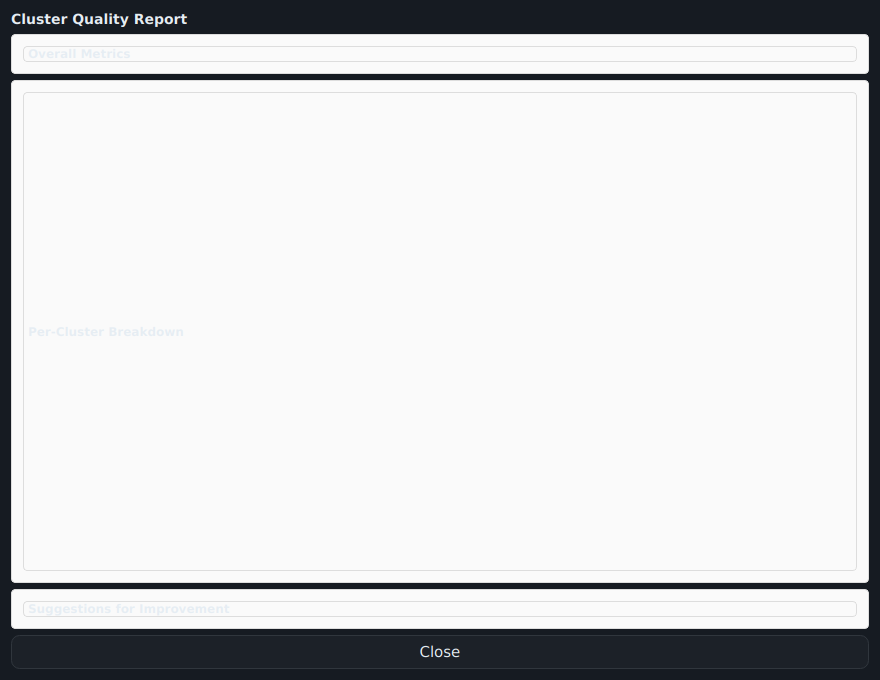
Notes
- This capture is populated with six clusters and full metrics. Everything you cannot see is present in the widget tree and rendering white on white.
#fafafacard fills and#333body copy assume a light host; the default theme is dark (D3).- Fourteen stylesheets — the densest of any dialog — including three hardcoded
font-sizevalues and a hand-rolled score-to-colour ramp that duplicates thesuccess/warning/dangertokens.
Theme Picker
unreadable labels gui/themes/picker.py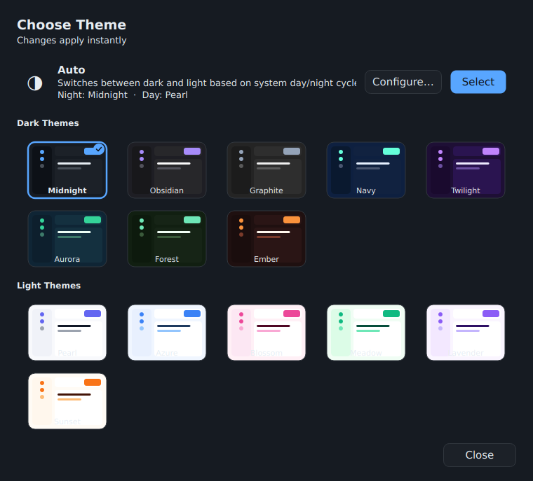
Notes
- Five of seven light theme names are invisible (D5) — drawn in the active dark theme's ink on the swatch's own light ground.
- The Auto row's description is clipped mid-word (“…day/night cycl”).
- Otherwise the strongest custom component in the app: the swatch genuinely previews sidebar, card, text and accent together. Fixing one word makes it excellent.
Clustering Wizard & Settings
clustering_wizard_dialog.py · settings_drawer.py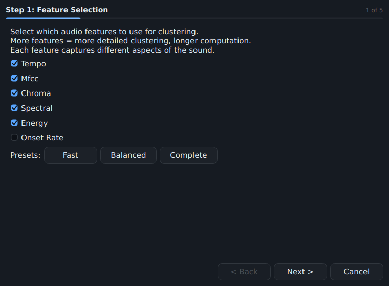
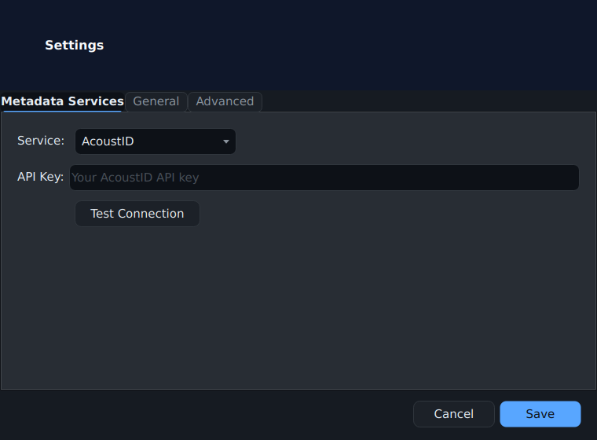
Notes
- Wizard: nine hardcoded
font-sizerules and eight colours; aStep 1 … 1 of 5counter that is the app's third progress idiom (C2); ASCII chevrons (< Back,Next >) where every other page uses glyphs; and a green progress bar that ignoresprogress_fg. - Settings: the title is inset ~56 px while the tab strip starts at x=0, so the
dialog has two competing left edges. Header hardcodes
#0f172aand#f8fafc— neither is a token in any theme (C4). - Neither dialog uses a card. Both would collapse to near-zero custom styling on the shared vocabulary.
The remaining eight
gui/dialogs/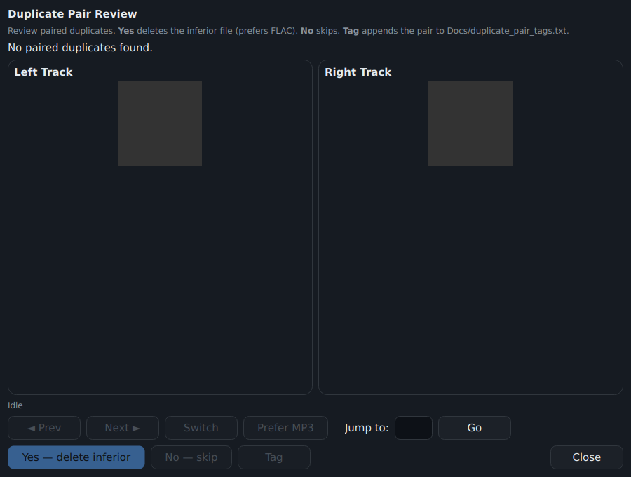
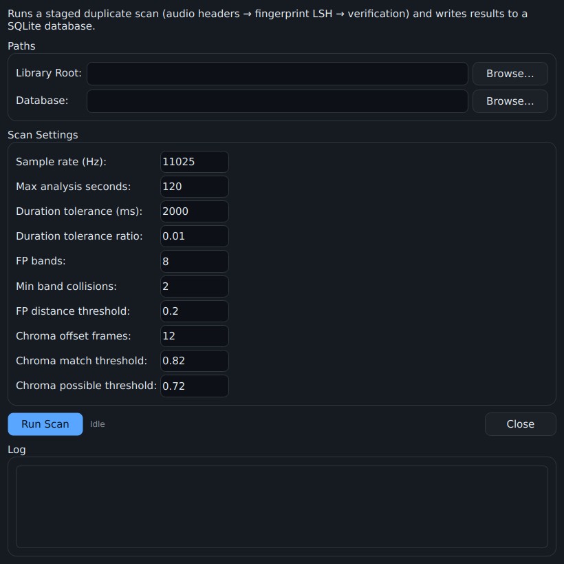
Notes
- Scan Engine and Bucketing POC are the model. Zero stylesheets, zero hardcoded
colours,
primaryBtnused correctly. They prove a dialog needs no custom styling at all. - Pair Review could not open until D2 was fixed. It then renders acceptably, though
it hardcodes
#22c55efor the winner label. - Fuzzy Duplicate Finder — three stylesheets, three px font rules; per
gui_inventory.mdmost of its search and filter fields are decorative. - Media Tester paints its art placeholder
#e2e8f0— a light grey slab that glares on every dark theme. - Also captured:
dlg_crash_log,dlg_bucketing_poc,dlg_media_tester,dlg_fuzzy_dupe,dlg_light_settings,dlg_light_cluster_quality_report.
Recommended direction
One recommendation, stated plainly, plus the two alternatives and why they lose.
Adopt the Indexer page as the standard, and make the system mandatory rather than available. Do not design a new look. The target is already shipping, already themed across 14 palettes, and already the page users meet first. The work is enforcement and migration, not invention.
Name it “Workbench”: every workspace is a hero card stating what the tool does, a stepper stating the workflow, titled cards for each stage, and exactly one primary action in a bordered action bar. Preview-first is the project's core architectural rule; the stepper is that rule made visible, which is why this direction fits AlphaDEX specifically rather than being generic tidiness.
Why not a fresh visual direction?
Because nothing here is ugly — it is inconsistent. The token layer, the custom painter and the 14 themes represent real, working investment. A restyle would discard that and leave the same structural problem: twelve pages that each invent their own layout. Consistency is the deliverable; a new palette would not produce it.
Why not standardise on Utilities instead?
It is tempting — Utilities is the only page that reads tokens, and its tile-and-pill treatment is attractive. But it suits a launcher of small independent actions, which is what that page is. It does not suit the eight pages that are long-running, multi-stage, preview-then-execute workflows. Take its status pill and icon tile into the shared library; do not take its page layout.
What the vocabulary is missing
Four gaps explain most of the ad-hoc styling. Close these and the escape hatches lose their reason to exist:
- A secondary / ghost button. Only
primaryBtn,dangerBtnandsuccessBtnexist, so every toolbar and mode control falls back to neutral or rolls its own — Graph's eight buttons, Player's transport, Help's full-width rows. - A status pill. Utilities built one; Tag Fixer, Compression and Library Sync each hand-colour a plain label instead.
- A spacing scale.
effects.pyexports radii but no spacing, so 20 margin variants accumulated. AddS.xs/sm/md/lgbesideR. - Reachable tokens. Give
WorkspaceBaseaself.tokensproperty and a_on_theme_changed()hook. Today a workspace must import the manager by hand, which is precisely why twelve of them never bothered.
Decisions this settles
- Commit actions are red, everywhere. Green marks completed state, not a button that writes to the library. Tag Fixer changes, not Duplicates.
- One step idiom: the stepper rail. Genre Normalizer's numbered headings become a stepper; the wizard's counter stays (it is a genuine modal sequence) but adopts the accent.
- Icons are icons, not label text. Strip emoji from button and tab strings; pass a
QIcon. - Phases are steps. Retire “Phase A/B/C” in favour of the step numbers already shown above it.
- The log drawer stays dark in light themes — but gets a deliberate console treatment so it reads as a choice.
Migration plan
Ordered so that each phase is independently shippable and the early phases make the later ones mechanical. Phases 0–2 are the ones worth doing regardless of which direction you pick.
Fix the eight defects
Independent of any design decision. D1 and D2 are two-word fixes that currently break tab labels, group-box titles and an entire dialog; D3–D5 are contrast bugs that make three surfaces unreadable; D7 and D8 are layout clipping.
- D1 and D2 are already applied in this branch — they had to be, to capture the screenshots above. The rest are listed with line numbers in Defects.
Close the escape hatches
No visual change; this is the step that makes everything after it cheap.
- Change
status_changedto carry a semantic level, not a hex. Deletes ~30 hardcoded colours across 11 files by itself. - Add
self.tokensand a theme hook toWorkspaceBase. - Add
secondaryBtn/ghostBtnto the painter and aStatusPillwidget lifted from Utilities. - Add a spacing scale to
effects.py. - Add a CI grep that fails on a new hex literal or
font-size:outsidegui/themes/. Without this the drift returns.
Delete what nobody sees
Three files carry styling that no user can reach, and every one of them is a place future drift can hide.
gui/qt_launcher.py— 698 lines, 47 stylesheets, 45 colours, reachable only from the legacy Tkinter app.gui/workspaces/clustered.py— a complete second Clustered page that is never routed to.gui/theme.py— a shim whosebuild_stylesheet()returns"".
Migrate the eight bare-title pages
Compression, Similarity, Tag Fixer, Genre Normalizer, Playlists, Clustered, Music Graph, Help. Each gets a hero card, a stepper where it has stages, titled cards, and one action bar. Largely mechanical after Phase 1. Start with Compression — 448 lines, a clear three-stage workflow, and it exercises every new component once.
Player, Utilities, dialogs
The three that need judgement rather than mechanics.
- Player keeps its full-bleed layout — that exception is legitimate — but every colour moves to tokens. Largest single job in the app at 1,980 lines.
- Utilities keeps its tiles; they get promoted into the shared widget library so other pages can use them.
- Dialogs adopt
workspaceCardand the button vocabulary. Scan Engine and Bucketing POC already show the target shape.
Re-run this audit
The capture harness used here is reproducible — it drives the real app under
xvfb-run, walks every workspace and sub-tab, and writes 51 PNGs. Wiring it into CI
turns this document into a regression check rather than a one-off.